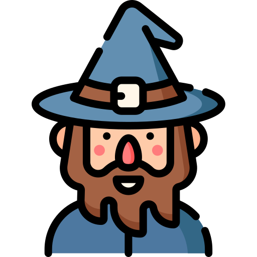

This is about Decoretum, an aspiring programmer (possibly database administrator, web developer, or applications programmer) that
wants to be adept at programming on different situations for different client needs. As an aspiring programmer, he practices programming on VS Code and Jupyter notebook.
He wants to deliver IT solutions and/or implementations to clients or businesses in need and not be a Manager.
Decoretum has a plethora of skills. He not only specializes in Magic but also studying and hardwork. He was able to overthrow the MBO
with ease, but he temporarily lost some of his arcane power.
This is a webpage dedicated to Decoretum's background in some aspects of his life.
Press the button below to know a random fact about Gael!
Know more about who I really am by pressing the buttons below!

Hi! My name is Decoretum! You can also call me Gael!
Capabilities and Background
Programming
Front-end
Decoretum has previous experiences in HTML and inline CSS. However,
he is currently learning again how to program with HTML and external CSS. Hence, this HTML document will be a canvas of
his knowledge and understanding in these fields.
Object-Oriented Programming
Decoretum has mastery and passion with working with object-oriented programming using Python. Inspired by the classic RPG
battle systems of old, he was able to create a Tkinter game that matches the player against a logical and organized
AI that contains almost identical movesets as the player.
Why Tkinter?
Well, Decoretum was taught Tkinter during his first course of programming. He appreciated the GUI and the utilities
that come with the GUI. He wanted to create life or motion from a GUI. Currently, Decoretum is creating
classes and objects and tests their limits and functionality. He is amazed by how classes and objects correlate and affect
other objects as well.
Speedcubing
Decoretum's greatest skill is arguably Speedcubing. Speedcubing involves
solving a Rubik's Cube puzzle within a short amount of time using methods
that optimize fast solving of the puzzle. Speedcubing could range from the
2x2 Rubick's cube up to the 7x7 Rubik's cube. Decoretum was inspired to
speedcube when he watched the video of Feliks Zemdegs 2013
Rubick's Cube World Championship finals in the 3x3 category. Watch the video here.
Begginer's Journey
When Decoretum started speedcubing in 2015, he started with the cross-on-top, corner-then-edge, and limited OLL and PLL.
He also learned fingertricks in order to maximize the efficiency of turning the Rubick's cube through the fingers. Eventually, he beat one of his classmates in a speedsolving mini-competition, and he went on a lonely journey to stardom. He learned F2L which
greatly maximized his speedcubing piece conceptualization and solving efficiency, and he then learned almost all OLL and PLL algorithms. He was averaging 20-25 seconds at that point.
Eventually, he discovered the concept of lookahead, but he couldn't understand the reasoning behind "turning slow" in order to be "more efficient". He cannot fathom this idea in F2L which made him not pass the 10 second barrier yet, but he was able to pass the 20 second barrier.
Intermediate Journey - Understanding of the Cube
Decoretum focused on the F2L area of his expertise in speedcubing. For him, 20 seconds was fast, but he wanted to be more efficient and strategic in the way he solves. He eventually averages 15 seconds due to his F2L knowledge and understanding. For 3-4 years, Decoretum noticed that
world-class speedcubers during his time solved speedcubes as if they were creating a "dance". Decoretum realized that this is the manifestation of the term "lookahead". He eventually reflected in the way he does his
F2L, and he was able to learn and implement various F2L strategies in the way he solves. He realizes that turning fast does not equate to "efficiency". The rate of turn of the fingers must be in sync with the mastery or visualization of the solver in the F2L.
This is when Decoretum finally understood the true essence of F2L. Decoretum finally averaged 11-12 seconds.
World-class level - Mastery of the Cube and Piece Logic
From 2018 and onwards, Decoretum had a small break from speedcubing which allowed him to grow in other skills. When he picked up the cube again, he suddenly felt a weird sensation, a
sensation that allowed his reflexes and muscle-memory to move to a very high level which allowed Decoretum to emphasize on his "look-ahead" or the ability to "see through the pieces". Decoretum suddenly had an 11-second solve which shocked him at first. Before that solve, he
11-second solves are usually rare since his best was 10 seconds at that time. Decoretum then understood. He has now mastered the muscle memory and intuitive F2L to the point of being
able to foresee and manage future scenarios for piece orientation and movement. Eventually, he was able to average 11 seconds, to 10 seconds, then to 9 seconds.
Decoretum's camera-best solve (not personal best) on 12/10/2020, 10pm
Gaming Background
Decoretum is very passionate in playing RPGs and sandbox games such as the Elder Scrolls V: Skyrim Special Edition, Minecraft, and Terraria.
Minecraft
Decoretum first played Minecraft back in 2008 or 2009. He was using a Steve skin while wandering how to progress in the game. He was confused since there
was no guide at all. There were only trees, grass, pond, and sheeps. Decoretum simply punched grass blocks and tree blocks and did not even make a crafting table.
First Mark
On 2012-2014, Decoretum attempted to learn Minecraft the hard way by actually researching the significance, functions, and capabilities of the items in Mincraft.
Decoretum played mostly on his father's apartments since he hasn't installed Minecraft on his mother's home yet. Decoretum attempted to build, create buildings, fight vicious monsters, and improve in PvP during those years.
He had difficulties with exploring and mining caves, but he eventually figured out the efficient ways on exploration through trial and error. He figured out how to navigate the darkness with the light of his torch,
and he was able to survive and thrive.
These events marked Decoretum's learning of the fundamentals of Minecraft survival and exploration.
Second Mark
Decoretum eventually played Minecraft on his mother's home. Numerous opportunities have awaited Decoretum. He began to babble in the arts of PvP through Skywars, Free-for-all PvP, and Factions.
He gained mastery of Minecraft combat, and he became arrogant. He was able to create his first no-cheat pure survival world, and he created an enormous house. Decoretum experienced the feeling of working hard
for one's own creation, and he valued hardwork more than ever. He eventually met and tamed a blue sheep named Sherbert which became his house protector. Eventually, buildings were constructed, and Decoretum felt
joy.
However, this was only the tip of the iceberg.
He eventually created another world filled with the biggest creation he has ever made which is called Garmadan Manor which took so much time from him. It was mostly made of wood in the
external portion, while there was a combination of concrete, stone, and wood in the internal section of the manor. Decoretum was very proud and happy for his creation. His confidence in building skyrocketed, and
he knew that there was still much more to learn. He eventually felt that the manor he created felt "forced" which made him create another world. This world would be his greatest creation yet (as of typing this webpage).
Third Mark
A portion of the main kingdom of Decoretum's third pure survival world
When Decoretum created this world, he had a plan. He conceptualized what his kingdom would look like and the "lore" behind his kingdom. He created a
medieval-themed kingdom from the grasslands to the sand dunes. He was optimistic about this concept, and he made it into a reality in his minecraft survival world. Decoretum
employed several building tactics and designs in order to integrate his ideas into minecraft with appropriateness or the compromise between minecraft architecture beauty and Decoretum's visualization.
Decoretum even made an enderman farm and several nether portals to easily navigate his kingdom. Note that everything found in this world was made purely in Survival mode (just like the rest of Decoretum's worlds).
Decoretum has more than 40 screenshots of his Third Mark gameplay. Hence, not all screenshots will be posted here.
An aerial view of Decoretum's main city in the dark
Decoretum's sand city with the nether portal
Not all good things last.
Eventually, a new update for 1.16 has been released, and Decoretum wanted to try the new update. Obviously, he would use the Optifine software in order
to enhance his gameplay as usual. However, the new version (using Optifine) was very laggy and buggy. At this moment, Decoretum made the worst Minecraft decision of his life.
He reverted back to an older version which was 1.13 prior to him installing the new version.
His world became corrupted, and he lost everything he worked on.
So what now?
Fourth Mark
The start of a new adventure
Decoretum's Hub
At this point, Decoretum still retained his building skills and his passion of creating a lore in his creations.
He still understood the value of block selection, landscaping, and simplicity of creation with authenticity.
However, Decoretum evolved
Without him knowing, he began to improve on his building skills and landscaping. His block selection became more unique with the addition of more complex block structure placements.
He instinctively improved in building, and he became more creative with his style.
The ceiling of Decoretum's hub
Decoretum's storage area within the hub
Decoretum's early landscaping attempts
The pictures above clearly shows the vast improvement of Decoretum's building and landscaping skills. At this point, Decoretum is focusing on the aesthetic of his world
rather than glory and fortune from raids and combat (since he already attained this from his previous marks). Decoretum already had all the neccessary farm and survival utilities he needs in order to survive
on a daily basis in a Minecraft week. As of writing this code, Decoretum hasn't defeated the Ender Dragon in this survival world yet. He is merely enjoying building and landscaping in order to create meaning from
the canvas, that is Minecraft.
An aerial overview of Decoretum's kingdom Bladespire
If you observe the structures of the trees and the buildings, you will see that the structures and block selection have greatly improved. The elements of Decoretum's kingdoms
were placed strategically, and the landscaping doesn't seemed to look forced. Block structures were simplified in order to look aesthetically better without the compromise of
quality.
An accident involving Decoretum losing his items in which he almost retrieved his items with creative mode but cancelled it
Decoretum did have a minor setback which was the loss of his mending items plus his mending villager. A Mending villager. Now, Decoretum needs to reserve his armor
for events which require him to truly take damage.